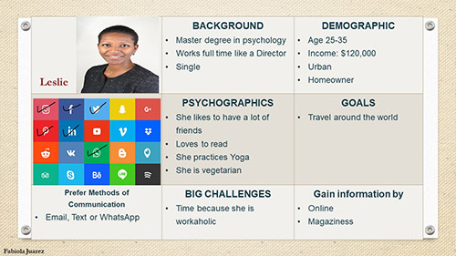

✍ Target Audience
Personas

Scenarios
Leslie is a single woman who likes to travel around the world, and discover new places, she loves doing extreme activities, but above all she enjoys the snow and cold places, her economic level allows her to travel frequently.
Emma is a young mom, she likes to watch the life of YouTubers, she would love to be a YouTuber and influencer, she is always looking to upload to internet new videos from different places, enjoying with her family, her husband is looking for a new job and they are looking for the best place to raise a family.
Daniel and his friends are looking for a place where they can go next winter since they live in warm places, they would like to have the experience to visit the true north and be able to walk on frozen lakes and rivers, but at the same time enjoy restaurants and life at the city.
Miguel is looking for a job but in a city with green areas to enjoy with his family and that his children, he would like a place where he can enjoy all the seasons of the year, but at the same time, it can be a city but not as big as Toronto or Vancouver.
Sandy lives in Canada and She is looking for universities in Canada to go to study, she wants to go to a city but not to a huge city, she wants a place that she can enjoy even in summer to be able to find a job and continue paying for university.